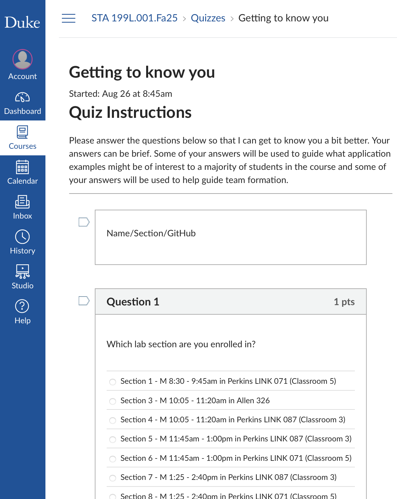
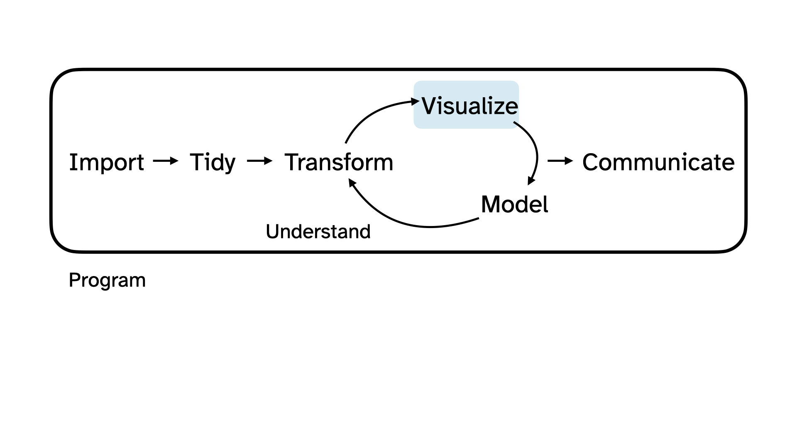
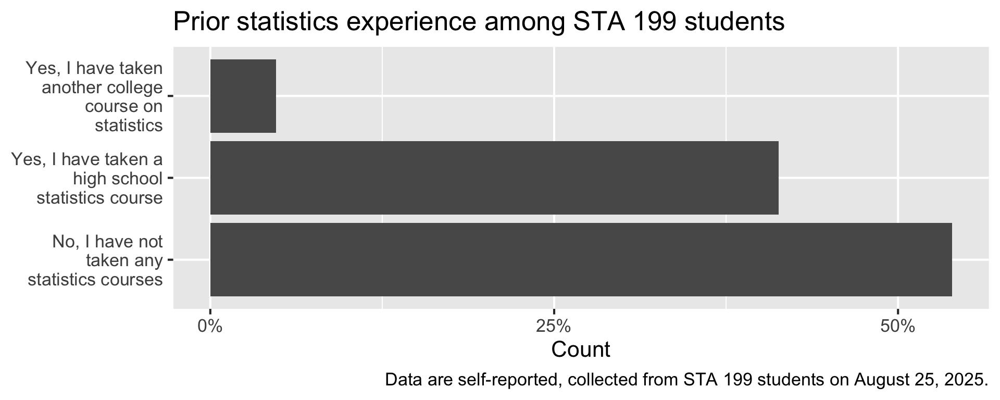
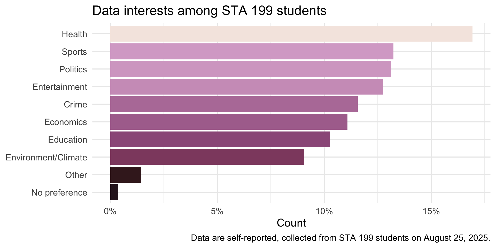

Hello, World!
Lecture 1
Hello world!
Meet the prof
Dr. Mine Çetinkaya-Rundel
Professor of the Practice
Director of Undergraduate Studies, Statistical Science
Director of First-Year Experience in Trinity College of Arts & Sciences
Office: Old Chem 211C
Office hours:
- 1-1:30 pm T Th (after class, here or outside the classroom)
- 12:45-2:15 pm F (Old Chem 211C)
- By appointment
Meet the course team
- Mary Knox (Course coordinator)
- Marie Neubrander (Head TA)
- Abuzar Khudaverdiyeva
- Alexa Fahrer
- Allison Yang
- Arijit Dey
- Benjamin Sherman
- Bethany Akinola
- Eduardo Vasquez
- Federico Arboleda
- Jessie Ringness
- Kathleen Zhang
- Katie Solarz
- Luxman Maheswaran
- Max Niu
- Natasha Harris
- Sarah Wu
- Xueyan Hu
- Ziyan Wang
Meet each other!
Please share with at least two classmates…
- Your name
- Your year
- Where you’re from
- What you did this past summer
- What you hope to get out of this course
Meet data science
Data science is an exciting discipline that allows you to turn raw data into understanding, insight, and knowledge.
We’re going to learn to do this in a modern and
tidyway – more on that later!This is a course on introduction to data science, with an emphasis on statistical thinking.
Let’s do some data science!
Yesterday we collected some data from you!
Today we’re going to explore that data together, following the data science cycle.

. . .
The data is anonymized and randomized and contains only a subset of the data collected. The rows have been shuffled for each column independently, meaning that no row belongs to a single student in the course. Additionally, any identifying information has been removed. Please do not try to de-anonymize or re-identify any individuals in the dataset.
Beginning the data science cycle
You took a survey:

Canvas stored your data in a CSV (comma-separated values) file:
We want to explore the data that is in that file!
Import

Load some packages
More on what packages are on Thursday, but in a nutshell “get your tools out of the toolbox”:
Import the data
Import the data called survey-anonymized.csv in the folder called data using the read_csv() function:
survey <- read_csv("data/survey-anonymized.csv")Take a peek at the data
survey# A tibble: 230 × 5
stats_experience programming_experience programming_languages
<chr> <chr> <chr>
1 Yes, I have taken a h… A little — I’ve writt… "Java, Python, Yaml,…
2 No, I have not taken … None <NA>
3 Yes, I have taken a h… A little — I’ve writt… <NA>
4 No, I have not taken … Some — I’ve worked on… <NA>
5 No, I have not taken … Some — I’ve worked on… <NA>
6 No, I have not taken … A little — I’ve writt… <NA>
7 Yes, I have taken a h… None "Python and java"
8 No, I have not taken … None <NA>
9 Yes, I have taken a h… None "Python- a little bi…
10 Yes, I have taken a h… None <NA>
# ℹ 220 more rows
# ℹ 2 more variables: learn_best <chr>, data_interests <chr>Participate üíªüì±

Scan the QR code or go to app.wooclap.com/sta199.
Log in with your Duke NetID.
Take a peek + Participate üíªüì±
# A tibble: 230 × 5
stats_experience programming_experience programming_languages
<chr> <chr> <chr>
1 Yes, I have taken a h… A little — I’ve writt… "Java, Python, Yaml,…
2 No, I have not taken … None <NA>
3 Yes, I have taken a h… A little — I’ve writt… <NA>
4 No, I have not taken … Some — I’ve worked on… <NA>
5 No, I have not taken … Some — I’ve worked on… <NA>
6 No, I have not taken … A little — I’ve writt… <NA>
7 Yes, I have taken a h… None "Python and java"
8 No, I have not taken … None <NA>
9 Yes, I have taken a h… None "Python- a little bi…
10 Yes, I have taken a h… None <NA>
# ℹ 220 more rows
# ℹ 2 more variables: learn_best <chr>, data_interests <chr>
Scan the QR code or go to app.wooclap.com/sta199. Log in with your Duke NetID.
Statistics experience
We asked you the following multiple-choice question where you could only pick one option:
Have you taken any statistics courses before?
- Yes, I have taken another college course on statistics
- Yes, I have taken a high school statistics course
- No, I have not taken any statistics courses
Visualize
One way to make sense of data collected via a question like this is to visualize it.

Visualize
Code
survey |>
count(stats_experience) |>
mutate(prop = n / sum(n)) |>
ggplot(aes(y = stats_experience, x = prop))+
geom_col(show.legend = FALSE) +
scale_y_discrete(labels = label_wrap(20)) +
scale_x_continuous(labels = percent_format(accuracy = 1), breaks = c(0, 0.25, 0.5)) +
labs(
title = "Prior statistics experience among STA 199 students",
y = NULL,
x = "Count"
) +
labs(
caption = "Data are self-reported, collected from STA 199 students on August 25, 2025."
)
Programming experience
We also asked you the following multiple-choice question where you could only pick one option:
How much experience do you have with programming?
- None
- A little — I’ve written a few lines or done small exercises
- Some — I’ve worked on a few projects or used it occasionally
- A lot — I use programming regularly and feel confident writing code
Visualize
Code
survey |>
count(programming_experience) |>
mutate(prop = n / sum(n)) |>
ggplot(aes(y = fct_reorder(programming_experience, prop), x = prop, fill = prop))+
geom_col(show.legend = FALSE) +
scale_y_discrete(labels = label_wrap(25)) +
scale_x_continuous(labels = percent_format(accuracy = 1), breaks = c(0, 0.1, 0.2, 0.3, 0.4)) +
scale_fill_viridis_c(option = "E") +
labs(
title = "Prior programming experience among STA 199 students",
y = NULL,
x = "Count"
) +
labs(
caption = "Data are self-reported, collected from STA 199 students on August 25, 2025."
) +
theme_minimal(base_size = 16)
Learn best
We also asked you the following multiple-choice question where you could as many options as you liked:
What types of data interest you?
- Crime
- Economics
- Education
- Entertainment (e.g., books, movies, music)
- Environment/Climate
- Health (e.g., social determinants of health, medical)
- Politics
- Sports
- Other
- No preference
Peek at the data
Code
survey |>
select(data_interests)# A tibble: 230 × 1
data_interests
<chr>
1 "Economics,Politics"
2 "Health (e.g.\\, social determinants of health\\, medical),Politic…
3 "Crime,Economics,Education,Environment/Climate,Politics,No prefere…
4 "Crime,Education,Politics,Sports"
5 "Crime,Education,Entertainment (e.g.\\, books\\, movies\\, music),…
6 "Crime,Entertainment (e.g.\\, books\\, movies\\, music),Health (e.…
7 "Health (e.g.\\, social determinants of health\\, medical)"
8 "Education,Entertainment (e.g.\\, books\\, movies\\, music),Health…
9 "Economics,Entertainment (e.g.\\, books\\, movies\\, music),Enviro…
10 "Economics,Environment/Climate,Sports"
# ℹ 220 more rowsTidy + Transform
Before we can visualize this variable, we need to tidy and transform it.

Tidy + Transform
Code
survey |>
# remove text in parentheses
mutate(data_interests = str_remove_all(data_interests, "\\s*\\(.*?\\)")) |>
# separate into multiple rows for each interest, using comma as delimiter
separate_longer_delim(data_interests, delim = ",") |>
count(data_interests, sort = TRUE) |>
mutate(prop = n / sum(n))# A tibble: 11 × 3
data_interests n prop
<chr> <int> <dbl>
1 Health 142 0.169
2 Sports 111 0.132
3 Politics 110 0.131
4 Entertainment 107 0.128
5 Crime 97 0.116
6 Economics 93 0.111
7 Education 86 0.103
8 Environment/Climate 76 0.0906
9 Other 12 0.0143
10 No preference 3 0.00358
11 <NA> 2 0.00238Visualize
Code
survey |>
mutate(data_interests = str_remove_all(data_interests, "\\s*\\(.*?\\)")) |>
separate_longer_delim(data_interests, delim = ",") |>
count(data_interests, sort = TRUE) |>
mutate(prop = n / sum(n)) |>
filter(!is.na(data_interests)) |>
ggplot(aes(y = fct_reorder(data_interests, prop), x = prop, fill = prop)) +
geom_col(show.legend = FALSE) +
scale_y_discrete(labels = label_wrap(20)) +
scale_x_continuous(labels = percent_format(accuracy = 1)) +
scale_fill_taylor_c(album = "Speak Now") +
labs(
title = "Data interests among STA 199 students",
y = NULL,
x = "Count",
caption = "Data are self-reported, collected from STA 199 students on August 25, 2025."
) +
theme_minimal(base_size = 16)
Learn best
We also asked you the following open-ended question:
How do you learn best?
Tidy + Transform + Summarize
We can use text mining techniques, like tokenizing to words to explore this open-ended question:
Code
# A tibble: 12 × 2
word n
<chr> <int>
1 learn 89
2 practice 66
3 visual 28
4 step 27
5 learning 26
6 hands 24
7 class 22
8 questions 21
9 examples 19
10 lecture 17
11 lectures 17
12 learner 16Tidy + Transform + Summarize
We can also tokenize to bigrams (pairs of words):
Code
survey |>
select(learn_best) |>
tidytext::unnest_tokens(bigrams, learn_best, token = "ngrams", n = 2) |>
count(bigrams, sort = TRUE) |>
filter(n > 10) |>
print(n = Inf)# A tibble: 20 × 2
bigrams n
<chr> <int>
1 i learn 73
2 learn best 68
3 practice problems 28
4 hands on 24
5 best by 21
6 best through 19
7 i also 16
8 i am 16
9 and then 15
10 in class 14
11 when i 14
12 by step 13
13 i can 13
14 step by 13
15 <NA> 13
16 problems and 12
17 a lot 11
18 a visual 11
19 on my 11
20 visual learner 11Programming language comfort
We also asked you the following open-ended question:
If you’ve programmed before, which languages have you used, and how comfortable do you feel with each? If you haven’t programmed before, please leave this question blank.
Take a peek + Participate üíªüì±
And the answers are non-trivial to tidy up, e.g.,
- Python - I've used it very little.
- I have not programmed before.
- Java - very comfortable. Python - pretty comfortable. C/C++ - not super comfortable, haven't used since high school.
Scan the QR code or go to app.wooclap.com/sta199. Log in with your Duke NetID.
Can AI help?
Code
library(ellmer)
chat <- chat_openai()
prompts <- survey |>
filter(!is.na(programming_languages)) |>
pull(programming_languages) |>
list()
type_language <- type_object(
language = type_string(),
experience = type_string()
)
language_experience <- parallel_chat_structured(chat, prompts, type = type_language)
language_experiencelanguage
1 Python, Java, R, C/C++, JavaScript, HTML/CSS, SQL, C#, VBA, MATLAB, Rust, Assembly, Swift, Stata, Bash, Typescript, Web3 Suite (HTML, CSS, JS), Nextflow, SAS, PsycoPy, Mathematica, React, Vue, Yaml, CourseKata, Flutter, Scratch
experience
1 Most students report a range of programming experience, from never having programmed before to being very comfortable in languages such as Python, Java, and R. Many took introductory courses (e.g., CS101, AP CS A) and are comfortable with basic programming constructs. Proficiency is generally highest in Python and Java, though some only have a little experience with languages like R, C/C++, and JavaScript. Quite a few have only used programming languages for specific classes or research projects and may not feel confident after a long break. Some students have experience with more niche or specialized tools such as MATLAB, SAS, and web technologies (HTML, CSS, JavaScript/JS frameworks). Many express a need for a refresher if not used recently. In summary, while a core group is comfortable with at least one language, especially Python or Java, many others have only basic to moderate experience and express the desire to gain more proficiency.Can it be trusted 100%?
Mathematica is a software system used for mathematics.
survey |>
filter(str_detect(programming_languages, "Mathematica")) |>
select(programming_languages)# A tibble: 1 × 1
programming_languages
<chr>
1 Most familiar to least: Java, Mathematica, Python, Matlab, React. . .
Nextflow extends the Unix pipes model with a DSL.
survey |>
filter(str_detect(programming_languages, "Nextflow")) |>
select(programming_languages)# A tibble: 0 × 1
# ℹ 1 variable: programming_languages <chr>. . .
PsycoPy is a desktop application for in-lab studies.
survey |>
filter(str_detect(programming_languages, "PsycoPy")) |>
select(programming_languages)# A tibble: 0 × 1
# ℹ 1 variable: programming_languages <chr>Course overview
Homepage
- All course materials
- Links to Canvas, GitHub, RStudio containers, etc.
Course toolkit
All linked from the course website:
- GitHub organization: github.com/sta199-f25
- RStudio containers: cmgr.oit.duke.edu/containers
- Communication: Ed Discussion
- Assignment submission and feedback: Gradescope
Activities
- Introduce new content and prepare for lectures by watching the videos and completing the readings
- Attend and actively participate in lectures (and answer questions for participation credit) and labs, office hours, team meetings
- Practice applying statistical concepts and computing with application exercises during lecture
- Put together what you’ve learned to analyze real-world data
- Lab assignments
- Homework assignments
- Exams
- Term project completed in teams
Attendance and participation
Daily in lecture
Tracked for credit, but not based on correctness, only participation (and often they will be questions designed to make you think that might not have a single right answer!)
Application exercises
Daily-ish in lecture
Not graded, but tracked for feedback on workflow
Labs
Hands-on practice with data analysis
A sigle exercise per lab, graded based on being there and in something reasonable + correctness
Completed in-person, in lab, in teams
Teams randomized each week until project teams assigned
Developed collaboratively, but turned in individually by the end of the lab session
8 throughout semester, two lowest scores dropped
No late work accepted
Homwork
Hands-on practice with data analysis
Some questions for practice with instant feedback by AI
Some questions to be graded by humans for correctness
Can start in lab if time permits, but completed at home
Can consult with course team and peers, but completed and turned in individually by the end of the week
6 throughout semester, lowest score dropped
Up to 3 days late (-5% per day), no late work accepted after that
One-time late penalty waiver: Can be used on any homework assignment, no questions asked, must be requested from Dr. Knox before the deadline
Exams
-
Two exams during semester, comprised of two parts:
In-class: 75 minute in-class exam. Closed book, one sheet of notes – 80% of the grade.
Take-home: Follow from the in class exam and focus on the analysis of a dataset introduced in the take home exam – 20% of the grade.
Final, in-class only: Closed book, one sheet of notes
Notes for exams: No larger than 8 1/2 x 11, both sides, must be prepared by you
No extensions or make-ups
Exam dates cannot be changed and no make-up exams will be given. If you can’t take the exams on these dates, you should drop this class.
Project
Dataset of your choice, method of your choice
Teamwork
Five milestones, interim deadlines throughout semester
Final milestone: Presentation in lab and write-up
Must be in lab, in-person to present
Peer review between teams for content, peer evaluation within teams for contribution
Some lab sessions allocated to project progress
Project due date cannot be changed. You must complete the project to pass this class.
Teams
Randomized at first for weekly labs
Then selected by you or assigned by me if you don’t express a preference for project and remaining labs
-
Expectations and roles
- Everyone is expected to contribute equal effort
- Everyone is expected to understand all code turned in
- Individual contribution evaluated by peer evaluation, commits, etc.
For the project: Peer evaluation during teamwork and after completion
Grading
| Category | Percentage |
|---|---|
| Lectures (attendance + participation) | 5% |
| Labs | 8% |
| HW | 12% |
| Project | 15% |
| Exam 1 | 20% |
| Exam 2 | 20% |
| Final | 20% |
See course syllabus for how the final letter grade will be determined.
Participate üíªüì±
Scan the QR code or go to app.wooclap.com/sta199.
Log in with your Duke NetID.
Wrap up
This week’s tasks
- Complete Lab 0
- Computational setup
- Getting to know you survey
- Accept your GitHub organization invitation
- Read the syllabus
- Complete readings and videos for next class